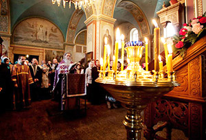
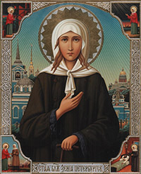
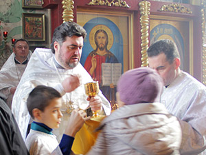
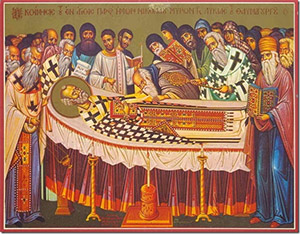
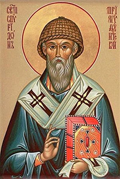

ЗАПИСКИ ПОСЛУШНИЦЫ
{kind=link}
Под этой рубрикой публикуются достоверные истории о дивном Промысле Божьем в судьбах людей, в том числе прихожан этого храма
Подячний молебень

Одного разу до храму зайшли схвильовані жінка із чоловіком та замовили подячний молебень і розповіли про свою пригоду.
Вони виїжджали із Одеси до Києва маршрутним автобусом пізно ввечері.
Подружжя розташувалося неподалік водія, і, коли вже залишилося лише кілька вільних місць, до салону зайшла компанія молодих людей, добре напідпитку.
Дівчата були одягнуті у дорогі шуби, відчувався аромат французьких парфум. Молоді люди почали сваритися із пасажирами, намагаючись сісти поближче до водія. Той ніяк не міг вплинути на ситуацію і попросив поступитися їм місцями. Отже, чоловік та жінка мусили пересісти на задні сидіння у різних місцях.
Нарешті автобус вирушив у дорогу, на трасі пасажири швидко задрімали. Раптово о першій годині ночі стався сильний удар: крики, кров, стогін…
Трапилося зіткнення з іншою машиною і удар прийшовся саме на ті місця, які «відвоювали» конфліктні пасажирки. Їх та водія у тяжкому стані було доставлено до лікарні машиною швидкої допомоги. Коли подружжя добралося до Києва, то поспішило до найближчого храму подякувати Богові за життя.
Допомогла Ксенія Петербурзька
Саме 6 лютого, коли православна церква шанує пам'ять святої Блаженної Ксенії Петербурзької до храму зайшла прихожанка Олена із букетами чудових квітів. Вона сказала, що дуже вдячна цій святій, адже та допомогла їй у скрутний час і привела до віри.
Сталося це кілька років тому спекотним літом. Її 3-річний син тяжко захворів і вони потрапили до Київської інфекційної дитячої лікарні. Хлопчик за станом здоров’я вважався найтяжчим у відділенні. До того ж, більшість рідних та знайомих роз’їхалися на літній відпочинок. У палаті вікно було зачинено металевою сіткою, отже повна ізоляція із зовнішнім світом. У відчаї Олена зателефонувала до однієї із найближчих подруг, але її відповідь збентежила і без того розгублену молоду маму: «Я фарбую волосся, потім приїду!»
Раптом ситуацію розрадила незнайома бабуся, яка підійшла до вікна і сказала: «Ксенія Петербурзька за вас помолиться, пожертвуйте копійчину!» Олена написала на листочку ім’я хлопчика і подала їй 10 гривень. Через деякий час незнайомка повернулася - віддала 3 гривні здачі.
Від тої пори лікування пішло на поправку, набуло позитивної динаміки. Коли маму із синочком виписували додому, Олена дізналася, що на території інфекційної лікарні є храм святої Блаженної Ксенії Петербурзької. Вона відразу пішла до церкви, щиро дякувала святій за допомогу, і це були її перші кроки на шляху до православної віри.
Голодний «багач»

Біля храму просить милостиню раб Божий Роман. Кілька років тому він потрапив у дорожньо-транспортну пригоду і став непрацездатним інвалідом. Чоловік живе разом із старенькою мамою, ліки вимагають великих коштів, отже вони ледь-ледь харчуються, а за одяг вже й мови немає.
Одного разу у храмі підійшла до Романа жінка і попросила залишитися після церковної служби. Благодійниця запросила чоловіка у автомобіль і повезла до найближчого маркету. Вона купила йому теплий пуховик, зимові штани, добротне взуття. Щасливий чоловік щиро дякував благодійниці. Безумовно, Господь поверне їй сторицею за витрачені на добре діло кошти.
Втім, від того часу перестали давати Роману милостиню, мовляв гарно вдягнутий не потребує грошей, але у Святому Письмі сказано «Всякому, хто в тебе просить дай. Від хліба твого подай алчущим...» (Лк.6:30).
Диво святого причастія

Протоієрей о. Олександр певний час служив в одному із столичних приходських храмів. Поряд із цією обителлю розташований госпіталь прикордонних військ, отже, нерідко військові люди заходили до церкви помолитися та попросити у Бога милості.
Того дня о. Олександр був требним. Надвечір офіцер та прапорщик звернулися до нього у храмі із запитаннями стосовно сповіді та святого причастія. Священик приділив значну увагу цим людям, адже відчув їхню зацікавленість церковними таїнствами. Невимушена розмова затяглася на тривалий час, а потім військові виявили бажання негайно посповідатися. Це була їхня генеральна сповідь за все життя.
Наступного дня офіцер та прапорщик прийшли на літургію, причастилися. У понеділок за призначенням лікарів вони здали розгорнутий аналіз крові і були приємно вражені позитивними результатами. Навіть медики розпитували їх, які допоміжні ліки вони вживали, а це було чудо святого причастія – благодать Божія доторкнулася до них…
Християнська кончина
Батько моєї подруги помер від астми у віці 53 роки. До храму він не ходив, до православної віри ставився байдуже. Коли чоловік тяжко захворів, це не давало спокою дружині та донечкам Вірі і Надії. Вони розуміли, що треба підготувати рідну людину до вічності – причастити та пособорувати, адже життєвий вантаж гріхів на схилі років у будь-кого чималий.
Всі домашні молилися та просили Божої допомоги. І от, одного разу батько прокинувся вранці у збудженому стані. Відразу запитав у дружини, «Хто був із чоловіків у нас вночі? Сидів ось тут, напроти ліжку у кріслі?»
Жінка здивувалася, мовляв, ніч пройшла спокійно, нікого не було. Батько розповів, що бачив юнака у одежі священнослужителя. Той звернувся до нього із словами: «Іван, тобі треба негайно покаятися, та причаститися, ти скоро перейдеш у інший світ – подумай про хліб вічний!» На хворого це справило величезне враження, немов він став свідком якогось незвичайного дива, яке переходить межу людського розуму.
Іван попросив одягнути його у найкращу сорочку, того ж дня священик отець Миколай – настоятель найближчого храму його причастив. Велике враження справив на батька вигляд самого батюшки, адже той мав статуру справжнього богатиря.
Покаяння хворого було щирим, а після цього він передзвонив всім своїм родичам та друзям і попросив у кожного вибачення, можливо когось ненароком образив у житті. Через кілька днів чоловік перейшов до вічності.
Сила Божої благодаті
Нещодавно моя подруга, яка працює лікарем у санітарно-епідеміологічній станції, вперше переступила поріг православного храму. Вона не могла спокійно сприймати те, як люди один за одним прикладаються до ікон. На склі залишаються плями, інколи сліди від губної помади і т. ін. Жінка вважала це недопустимим, з точки зору санітарно-гігієнічних правил, джерелом інфекції.
Врешті-решт, одного недільного дня вона прийшла до храму, приложилася до ікони, що лежала на аналої, і непомітно для оточуючих, зробила у пробірку змиви із скла для бактеріологічних аналізів. Все це ретельно обстежилось у санітарно-епідеміологічній станції. Результат виявився однозначним: ні вірусів, ні грибків, ні бактерій на склі не було, воно залишалося стерильним. Це значно укріпило лікаря у православній вірі. Згодом вона знайшла підтвердженні й того, що колокольний дзвін чистить повітря.
Пригадую, як у радянські часи популярний журнал «Наука і життя» опублікував матеріали із дослідженням, як колись, під час епідемії холери у Москві, саме ті люди, які ходили до храму, не захворіли. Науковці пояснювали це дією ладану, але ж православні християни знають силу Божої благодаті.
До речі, коли сталася Чорнобильська катастрофа, заміряли рівень радіаційного забруднення на території Києво-Печерської лаври і в печерах. Радіації взагалі не виявили.
Додам і таке: інколи ново начальні парафіяни по-своєму маловір’ю із підозрою ставляться до тих, хто перед ними причащається – чи не хворі вони, не кашляють часом? Інколи мені доводилося у храмі чути такі слова: «У Бога вірю, але до причастія не підійду, бо там хворі поперед лізуть!» Але, разом з тим, священик після всіх причасників приймає Святі Дари із лжиці і не має від цього проблем із самопочуттям.
Якщо людина із благоговінням і страхом Божим, смиренно і з покаянним почуттям пропускає вперед інших і підходить до Чаши, то отримує особливу благодать, відчуває істині плоди святого причастія.
Як молитва врятувала
Я їхала в електричці до Києва разом із чорницею Оленою із столичного Покровського монастиря. Ми розмовляли про життя, велику Божу милість до нас грішних.
Олена пригадала, як її у складній життєвій ситуації захистила молитва. Так, пізньою осінньою порою їй треба було поїхати на дачу. На той час, відпочиваючі вже роз’їхалися по домівках, на вулицях не видно жодної людини. Жінка швидко впоралася зі справами, зібралася додому, вже вийшла на вулицю. Раптом вона побачила, як до неї через городи біжить лютий пес кавказької породи. Порятунку не було чекати від кого. Олена не розгубилася, продовжувала йти у своєму напрямку і читати вголос 90-й псалом «Живий в помочі Вишнього…».
Як потім мені вона розповідала, такої щирої молитви в її житті ще ніколи не було, у неї вона вклала всю душу. Кожну мить жінка чекала напад лютої тварини, але все обійшлося – навкруги стояла тиша. Так і добралася вона до залізничної станції.
По вірі вашій буде вам…

Прихожанка храму Інна із захопленням розповіла мені про паломництво на острів Корфу (Греція) до мощів святителя Спиридона Триміфунтського, чудотворця. Відбулося це у серпні нинішнього року.
Бажання помолитися у святому місці та поклонитися нетлінним мощам виникло у Інни давно і стало духовною потребою. Спонукало до цього хвороба батька, який у свої 65 років страждав на цукровий діабет, від якого на ногах не загоювалися рани. Ніякі медикаментозні та народні засоби не допомагали. Інна дуже любила свого батька, вважала його надзвичайно доброю людиною, та й він їй завжди підтримував та допомагав у житті. Донечка болісно сприймала тілесні муки близької людини. Вона дала обіцянку помолитися та попросити йому здоров’я у мощів Спиридона Триміфунтського. Інна тримала сугубий строгий піст, причастилася у святому місці. Коли паломниця повернулася додому, то її чекала радісна звістка - здоров’я батька значно поліпшилось, рани нарешті почали загоюватись.
Разом із тим, чоловік Інни, нецерковна людина, всіляко був проти цього паломництва, мовляв: «Що ти там забула? Навіщо гроші марно витрачаєш?» Коли він в аеропорту проводжав дружину, та пообіцяла за нього помолитися, але почула у відповідь: «А навіщо, у мене і так все добре!»
І от, найближчим часом сталося так, що він опік руку (2 ступінь), у нього викрали дорогий мобільний телефон, чоловік підвернув ногу і та розпухла. Тож, як віримо, так і живемо…